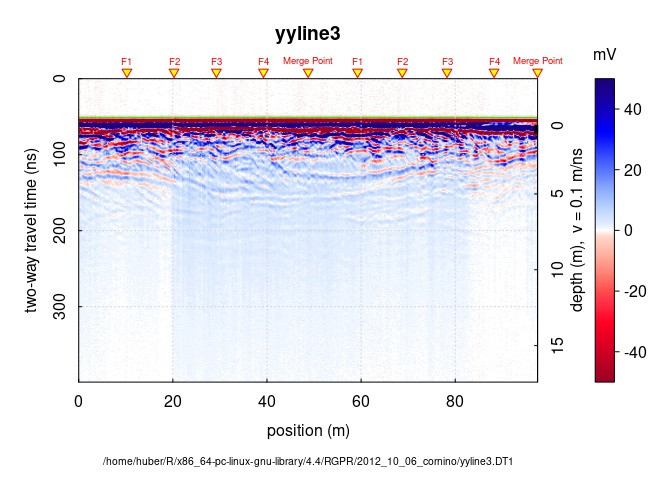
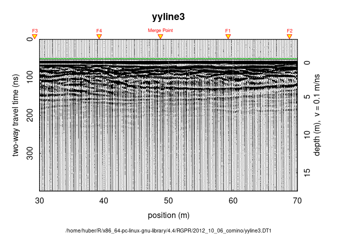

Tutorial plot GPR
Load RGPR
library(RGPR)
Don't hesitate to contact me if you have any question:
emanuel.huber@pm.me
Attaching package: 'RGPR'
The following object is masked from 'package:base':
intersect
Default plot
dsn0 <- c(system.file("2012_10_06_cornino", "yyline3.DT1", package="RGPR"),
system.file("2012_10_06_cornino", "yyline3.HD", package="RGPR"))
x <- readGPR(dsn0[1])
plot(x)

You can tweak many things, among others:
Plot type By setting
typeequal to eitherraster,wiggles(see Figure 2) orcontourTime-zero line The green line indicates the position of time-zero.
Fiducial markers The yellow triangle indicates the position of a fiducial marker that was set during the survey to mark something (such as a specific object close to the GPR line, a change in morphology/topography/sedimentology or an intersection with another GPR line). These markers are very useful to add topographic data to the GPR profile, particularly when the fiducial markers correspond to the locations where the (x,y,z) coordinates were measured.
Labels like axis labels (
xlab,ylab), title (main),Colorbar
Export as PDF or PNG By setting
export = file_path.png.
plot(x, type = "wiggles", wiggles = list(size = 0.02, side = 1), xlim = c(30, 70))

Running Code
When you click the Render button a document will be generated that includes both content and the output of embedded code. You can embed code like this:
1 + 1
[1] 2
You can add options to executable code like this
[1] 4
The echo: false option disables the printing of code (only output is
displayed).